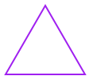
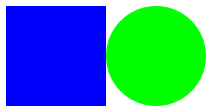
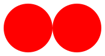

2 Shape Katas
2.1 Bronze Shape Kata (5 minutes)
A.K.A. Red Circle Kata
Teaching Tip: Start with all the code projected/written on the board. Remove the lines one by one, testing the students each time.
To earn this Kata students should create a red circle.
Like so:
#lang racket (require 2htdp/image) (circle 80 'solid 'red)
2.2 Silver Shape Kata (5 minutes)
A.K.A. Any Shape Kata
Teaching Tip: Don’t give any example code for this badge. Have students extrapolate from circle code.
To earn this Kata  students should translate a sentence of this type:
Make a gold star that is 30 pixels.
To code of this type:
#lang racket (require 2htdp/image) (star 30 'solid 'gold)
This badge should ONLY be earned after student has built multiple shapes.
triangle
square
rectangle *note: needs 2 number arguments
ellipse *note: needs 2 number arguments
2.3 Gold Shape Kata (5 minutes)
A.K.A. Break-It Shape Kata
To earn this Kata  students code a shape with a color that doesn’t work.
NOTE: The code must still run, but the shape should appear black.
For example:
#lang racket (require 2htdp/image) (square 30 'solid 'puce)
2.4 Platinum Shape Kata
A.K.A. Not-Solid Kata
To earn this Kata  students should find the 1 other option that is the opposite of 'solid and code a shape featuring it.
Teaching Tip: Put your students into teams to figure this one out. Encourage super secrecy in order not to give away the answer to other teams!
An example:
#lang racket (require 2htdp/image) (triangle 50 'outline 'purple)